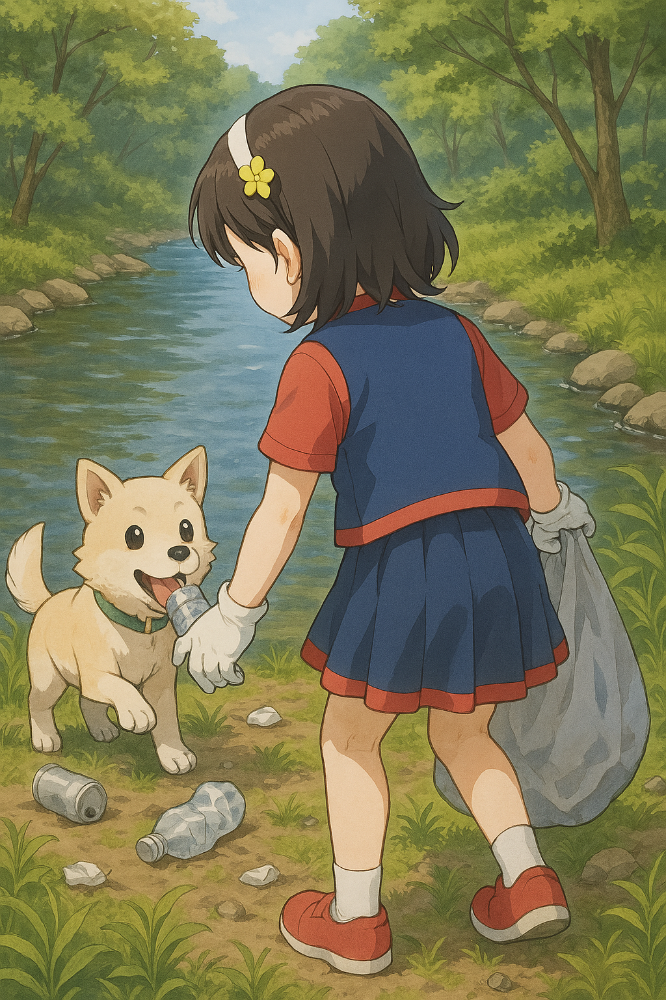

メイン画像（スライドショー）
• イベント情報

イベント・ボランティア募集カレンダー
イベントやボランティア募集の日をカレンダー形式で確認できます。
ここにカレンダーが表示されます。
• ボランティア募集情報
| 番号 | 行事名 | 日時 | 募集団体 |
|---|---|---|---|
| 4-3 | 定例古布ティッシュ切りボランティア | 4月19日（土） 15:00～16:00 |
つながりひろば |
| 4-4 | エコけんごみ拾い＆組成調査（リンク無し） | 4月20日（日） 10:00～11:30 |
NPO法人エコけん |
| 4-5 | 福岡ファミリーハウス ミール支援（お弁当作り）（リンク無し） | 4月23日(水) 10:00～16:00 （部分参加も可） |
福岡ファミリーハウス支援"SHIPS" |
• わ・わ・わ通信 最新号

• 新着情報
新着情報一覧 >• SNSもやっています！
センターの最新情報はSNSでも発信中です！ぜひフォローしてください。
• みんなの投稿

「先日参加したクリーン活動、とても楽しかったです！また参加したいです。」
「子供向けプログラミング教室、子供が夢中になっていました。ありがとうございました！」